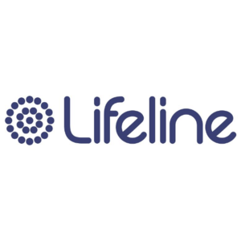
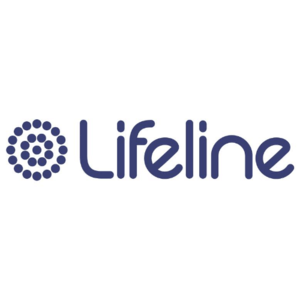

THE WORLD'S LARGEST FUN RUN, THE SUN-HERALD CITY2SURF, WILL BE BACK IN 2021.
Bringing 85,000 people together from all walks of life to run, jog, walk or stroll the famous 14km course from Sydney’s CBD to the iconic Bondi Beach.
Save the date for another spectacular year as we combine your love of running with live entertainment, food, training runs, fundraising and much more.
Let’s run Sydney!
We've Raised
$729,116
Of our target
$2,500,000
26
Fundraisers
38
Teams
120
Charities
5,408
Donations
First Place record Male, Female & Elite Wheelchair Athlete (1971 - 2019)
45:08
Steve Moneghetti
1991, Male
40:03
Suzie Power
2001, Female
33:32
Kurt Fearnley
2016, Elite Wheelchair Athelete
Media
World’s Largest
Join 85,000 runners as they run from Sydney’s CBD to Bondi Beach
Run with Heart
Giving back to charity is the beating heart of City2Surf
Have fun
Get your mates together and have some fun


{kind=link}
{kind=link}
{kind=link}
{kind=link}
{kind=link}
{kind=link}
{kind=link}
{kind=link}
{kind=link}
{kind=link}
News
MORE THAN 13,000 TAKE PART IN THE SUN-HERALD CITY2SURF VIRTUAL RUN
Runners from across Sydney and around the world take part in The Sun-Herald City2Surf Virtual Run.
OCT 21, 2020
THE SUN-HERALD CITY2SURF VIRTUAL RUN OFF AND RUNNING
More than 12,000 runners already signed up to tackle their own 14km course.
OCT 18, 2020
How to City2Surf Virtual Run - The Right Way!
Here’s our top 6 tips for making the most out of your City2Surf Virtual Run experience in 2020!
OCT 2, 2020
Charity Partners


 
